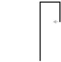

3 Robot Lab challenges¶
Here you are given a number of challenges to do. These challenges are a bit different from the activities you did earlier in RoboLab sessions. We leave you to work out the challenges for yourself, although you are encouraged to use the forums if you need help or if you want to share or discuss any of your ideas with other students.
The purpose of the challenges is to allow you to try your hand at writing your own RoboLab programs. Don’t spend too much time on this work. If you get stuck, take a break: it’s surprising how often a solution to a programming problem comes to mind if you take a few minutes away from the screen and the keyboard and do something completely different instead.
The challenges in the next notebook are more difficult and are completely optional. They generally require you to have had some computer programming experience before you started this module.
In the meantime, once you have finished RoboLab Session 3 I suggest you take a well-earned break before going back to the website to complete Study week 3.
Challenge: Moving Simon forwards¶
Write a RobotLab program to make the Simon robot move forwards for two seconds.
Challenge: Traversing a triangle¶
Please note that you must complete and submit the ‘Traversing a triangle’ activity as part of your ePortfolio.
Write a program to make the simulated program trace out a triangular path. Run the program in pen-down mode by checking the pen down checkbox in the simulator and grab a screenshot of the code + simulator output.
TO DO: need some guidance on taking screenshots etc
Challenge: Making a countdown program¶
Write a RoboLab program that counts down from 10 to 0 and finishes by saying ‘OK’.
Question¶
Would you like a hint?
Answer¶
The simulator speech engine can only speak “strings” not digits. So you need to pass in numbers as a string, such as '2', not as a literal numeric value, such as 3.
Challenge: Traversing a hook¶
Write a RoboLab program to make the simulated robot trace out the following path: going up the screen, making three turns to the right and ending up crossing its original path, as shown below.

Question¶
Would you like a hint?
Answer¶
It will help to create three constants, longTime, shortTime and turnTime. You could make longTime about twice as long as shortTime. Use the tank_drive() construct for the movement up the screen. Since this is long, use the constant longTime. I used the tank_turn() command to make the robot turn for a specified number of wheel rotations.